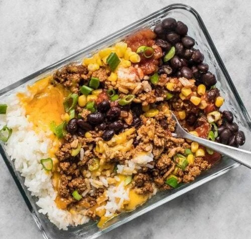

Meal-Prep Burrito Bowls

The "Batch Cooking" Specialist
Prep Time: 15 mins | Servings: 4 | Dietary: Vegetarian
Ingredients:
- 2 cups cooked quinoa or cilantro-lime rice
- 2 cans (15oz) black beans, rinsed and drained
- 1 cup frozen corn, thawed
- 1 cup fresh salsa
- 4 tbsp Greek yogurt
Step by Step:
- Prep: Line up four airtight containers.
- Divide: Evenly distribute the quinoa and black beans among the containers.
- Toppings: Add a layer of corn and a scoop of salsa to each.
- Store: Seal and refrigerate for 3-5 days.
- Final Touch: Do not add the yogurt or avocado until the day you eat it to keep it fresh.